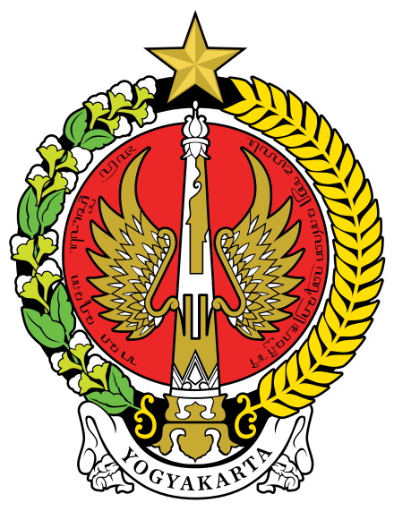

| DIY Yogyakarta | |
|---|---|
| Kota | DIY Yogyakarta |
| Provinsi | Daerah Istimewa Yogyakarta |
| Pemerintahan | |
|
|
|
Daerah Istimewa Yogyakarta (DIY) adalah wilayah tertua kedua di Indonesia setelah Jawa Timur, yang dibentuk oleh pemerintah negara bagian Indonesia. Daerah setingkat provinsi ini juga memiliki status istimewa atau otonomi khusus. Status ini merupakan sebuah warisan dari zaman sebelum kemerdekaan.
Candi Prambanan adalah candi Hindu terbesar di Indonesia, terletak di Desa Bokoharjo, Sleman, Yogyakarta, dengan pintu gerbang di Desa Tlogo, Klaten, Jawa Tengah. Candi ini diduga dibangun pada abad ke-9 oleh Wangsa Sanjaya pada masa Raja Bitung Maha Sambu, sebagaimana disebutkan dalam Prasasti Syiwargha tahun 856 M. Pemugaran Candi Prambanan dimulai pada tahun 1733 oleh C.A. Lons, dilanjutkan oleh Groneman pada 1885 dan van Erp pada 1902. Setelah berbagai upaya, pemugaran Candi Syiwa dan Candi Apit selesai pada tahun 1953, namun restorasi masih terus berlanjut hingga kini.